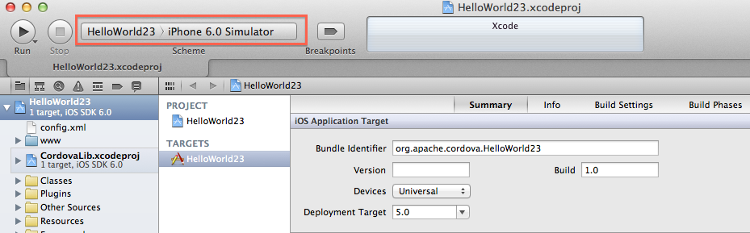
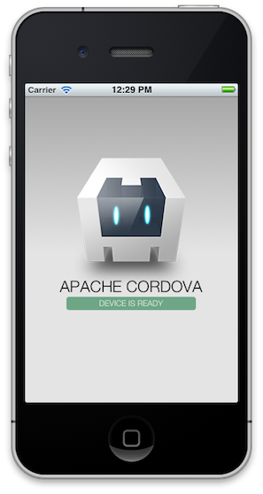
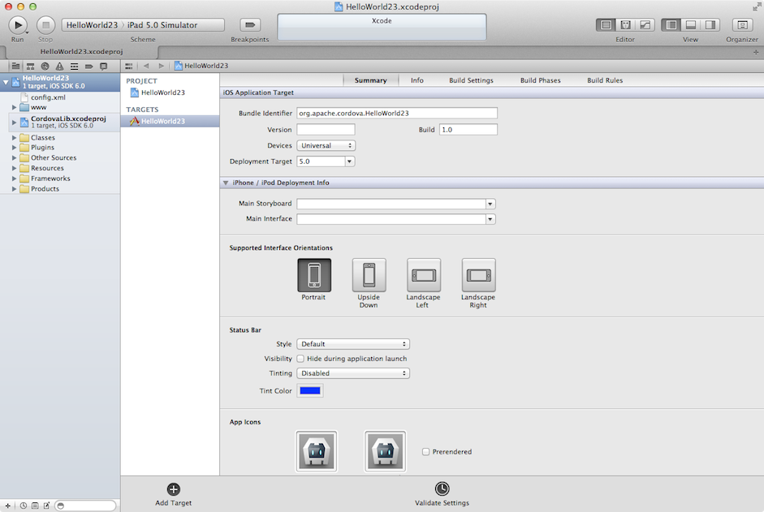

iOS Platform Guide
This guide shows how to set up your SDK development environment to deploy Cordova apps for iOS devices such as iPhone and iPad, and how to optionally use iOS-centered command-line tools in your development workflow. You need to install the SDK tools regardless of whether you want to use these platform-centered shell tools or cross-platform Cordova CLI for development. For a comparison of the two development paths, see the Overview. For details on the CLI, see Cordova CLI Reference.
Requirements and Support
Apple庐 tools required to build iOS applications only run on the OS X operating system on Intel-based Macs. Xcode庐 6.0 (the minimum required version) runs only on OS X version 10.9 (Mavericks) or greater, and includes the iOS 8 SDK (Software Development Kit). To submit apps to the Apple App Store鈩�requires the latest versions of the Apple tools.
You can test many of the Cordova features using the iOS simulator installed with the iOS SDK and Xcode, but you need an actual device to fully test all of the app's device features before submitting to the App Store. The device must have at least iOS 8 installed, the minimum iOS version supported as of Cordova 4.0.0. Supported devices include iPhone 4S, iPhone 5, iPhone 5C, iPhone 5S, iPhone 6, iPhone 6 Plus, iPhone 6S, iPhone 6S Plus, iPhone SE, iPad 2, iPad 3, iPad 4, iPad Air, iPad Air 2, iPad Pro, iPad Mini, iPad Mini 2, iPad Mini 3, iPod Touch 5th gen and iPod Touch 6th gen or later.
Installing the Requirements
Xcode
There are two ways to download Xcode:
from the App Store, available by searching for "Xcode" in the App Store application.
from Apple Developer Downloads, which requires registration as an Apple Developer.
Once Xcode is installed, several command-line tools need to be enabled for Cordova to run. From the command line, run:
$ xcode-select --install
Deployment Tools
The ios-sim and ios-deploy tools - allows you to launch iOS apps into the iOS Simulator and iOS Device from the command-line.
To install them, run the following from command-line terminal:
$ npm install -g ios-sim
$ npm install -g ios-deploy
Project Configuration
Installing Xcode will mostly set everything needed to get started with the native side of things. You should now be able to create and build a cordova project. For more details on installing and using the CLI, refer to Create your first app guide.
Deploying to Simulator
To preview the app in the iOS simulator:
Open the project file from Xcode and make sure the .xcodeproj file is selected in the left panel.
Select the hello app in the panel immediately to the right.
Select the intended device from the toolbar's Scheme menu, such as the iPhone 6.0 Simulator as highlighted here:

- Press the Run button that appears in the same toolbar to the left of the Scheme. That builds, deploys and runs the application in the simulator. A separate simulator application opens to display the app:

Only one simulator may run at a time, so if you want to test the app in a different simulator, you need to quit the simulator application and run a different target within Xcode.
Xcode comes bundled with simulators for the latest versions of iPhone and iPad. Older versions may be available from the Xcode 鈫�Preferences 鈫�Downloads 鈫�Components panel.
Deploying to Device
For details about various requirements to deploy to a device, refer to the Launch Your App On Devices section of Apple's About App Distribution Workflows. Briefly, you need to do the following before deploying:
Create a Provisioning Profile within the iOS Provisioning Portal. You can use its Development Provisioning Assistant to create and install the profile and certificate Xcode requires.
Verify that the Code Signing Identity setting within the Code Signing section within the build settings is set to your provisioning profile name.
To deploy to the device:
Use the USB cable to plug the device into your Mac.
Select the name of the project in the Xcode window's Scheme drop-down list.
Select your device from the Device drop-down list. If it is plugged in via USB but still does not appear, press the Organizer button to resolve any errors.
Press the Run button to build, deploy and run the application on your device.
Signing an App
First, you should read through the Code Signing Support Page and the App Distribution Workflows.
Using Flags
To sign an app, you need the following parameters:
| Parameter | Flag | Description |
|---|---|---|
| Code Sign Identity | --codeSignIdentity |
Code signing identity to use for signing. It can be created with Xcode and added to your keychain. |
| Provisioning Profile | --provisioningProfile |
GUID of the provisioning profile to be used for signing. It is copied here on your Mac: ~/Library/MobileDevice/Provisioning\ Profiles/. Opening it in a text editor, you can find the GUID which needs to be specified here. |
| Code Sign Resource Rules | --codesignResourceRules |
(Optional) Used to control which files in a bundle should be sealed by a code signature. For more details, read The OS X Code Signing In Depth article |
Using build.json
Alternatively, you could specify them in a build configuration file (build.json)
using the --buildConfig argument to the same commands. Here's a sample of a
build configuration file:
{
"ios": {
"debug": {
"codeSignIdentity": "iPhone Development",
"provisioningProfile": "926c2bd6-8de9-4c2f-8407-1016d2d12954"
},
"release": {
"codeSignIdentity": "iPhone Distribution",
"provisioningProfile": "70f699ad-faf1-4adE-8fea-9d84738fb306"
}
}
}
Using xcrun
You can also sign from the command line using the following command:
xcrun -sdk iphoneos PackageApplication -v /home/user/app/build/device/MyApp.app -o /home/user/app/build/device/MyApp.ipa --sign "iPhone Development" --embed "7151ab45-6085-4ea1-9bcd-022b5cebe44b"
Debugging
For details on the debugging tools that come with Xcode, see this article and this video.
Open a Project within Xcode
Cordova for iOS projects can be opened in Xcode. This can be useful if
you wish to use Xcode built in debugging/profiling tools or if you are
developing iOS plugins. Please note that when opening your project in Xcode,
it is recommended that you do NOT edit your code in the IDE. This will edit the code
in the platforms folder of your project (not www), and changes are liable to be overwritten.
Instead, edit the www folder and copy over your changes by running cordova build.
Plugin developers wishing to edit their native code in the IDE should use the --link flag when adding their
plugin to the project via cordova plugin add. This will link the files so that changes to the plugin files in the
platforms folder are reflected in your plugin's source folder (and vice versa).
Once the ios platform is added to your project and built using cordova build, you can open it from
within Xcode. Double-click to open the ${PROJECT_NAME}/platforms/ios/${PROJECT_NAME}.xcodeproj
file. The screen should look like this:

Platform Centered Workflow
cordova-ios includes a number of scripts that allow the platform to be used without the full Cordova CLI. This development path may offer you a greater range of development options in certain situations than the cross-platform cordova CLI. For example, you need to use shell tools when deploying a custom Cordova WebView alongside native components. Before using this development path, you must still configure the SDK environment as described in Requirements and Support above.
For each of the scripts discussed below, refer to
Cordova CLI Reference for more information on their
arguments and usage. Each script has a name that matches the corresponding CLI
command. For example, cordova-ios/bin/create is equivalent to
cordova create.
To get started, either download the cordova-ios package from npm or Github.
To create a project using this package, run the create script in the bin
folder:
$ cordova-ios/bin/create ...
To run the app, use the run script in the bin folder:
$ cordova-ios/bin/run
The created project will have a folder named cordova inside that contains
scripts for the project-specific Cordova commands (e.g. run, build, etc.).
Additionally, The project will feature a structure different from that of a
normal Cordova project. Notably, /www is moved to /assets/www.
To install plugins in this project, use the Cordova Plugman Utility.
Upgrading
Refer to this article for instructions to upgrade your cordova-ios version.